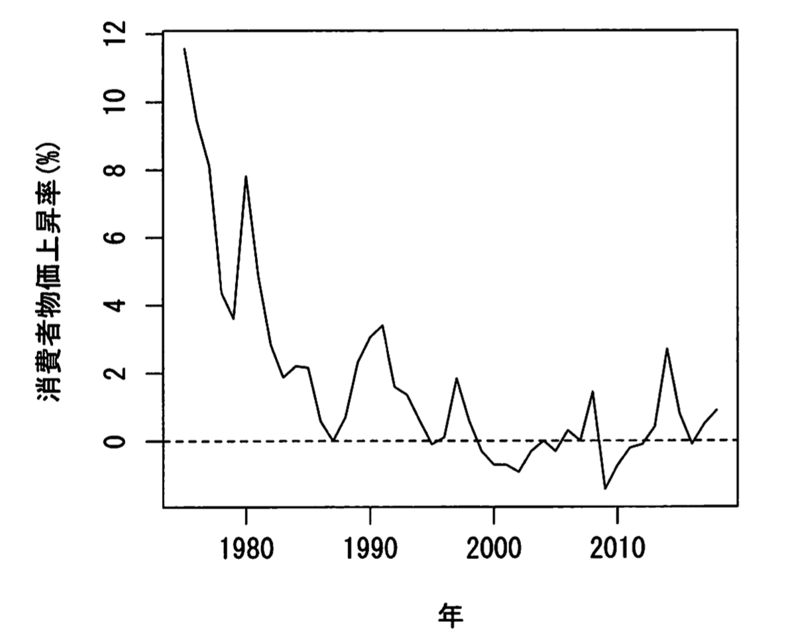
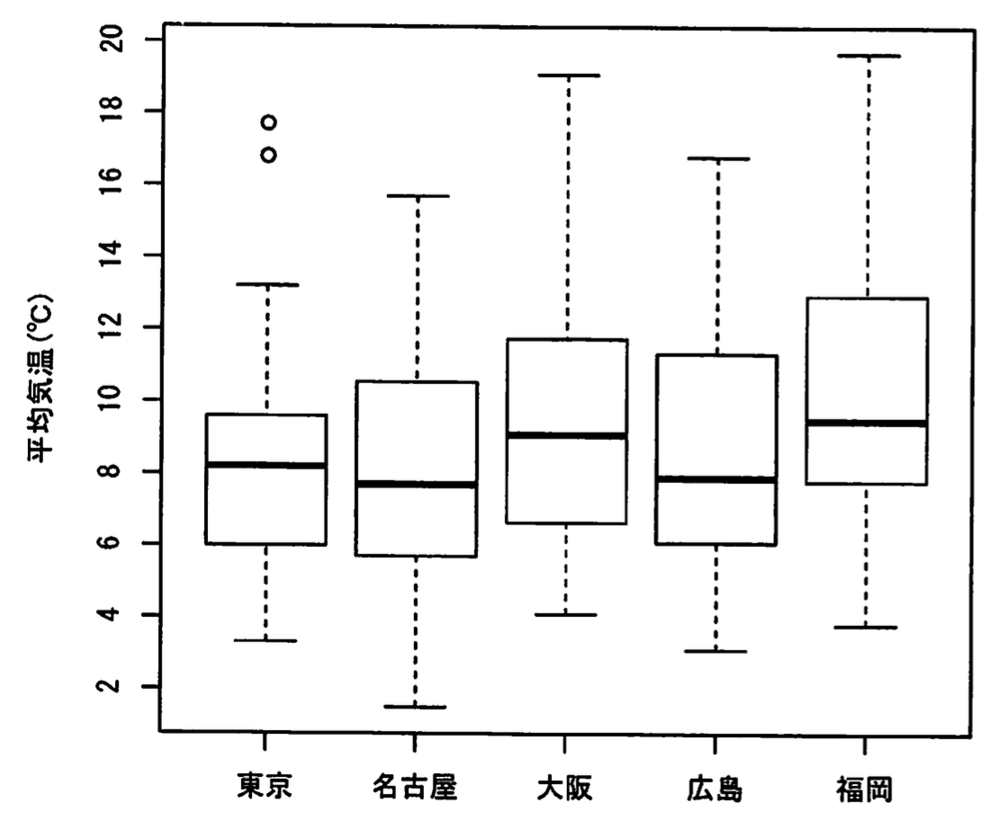
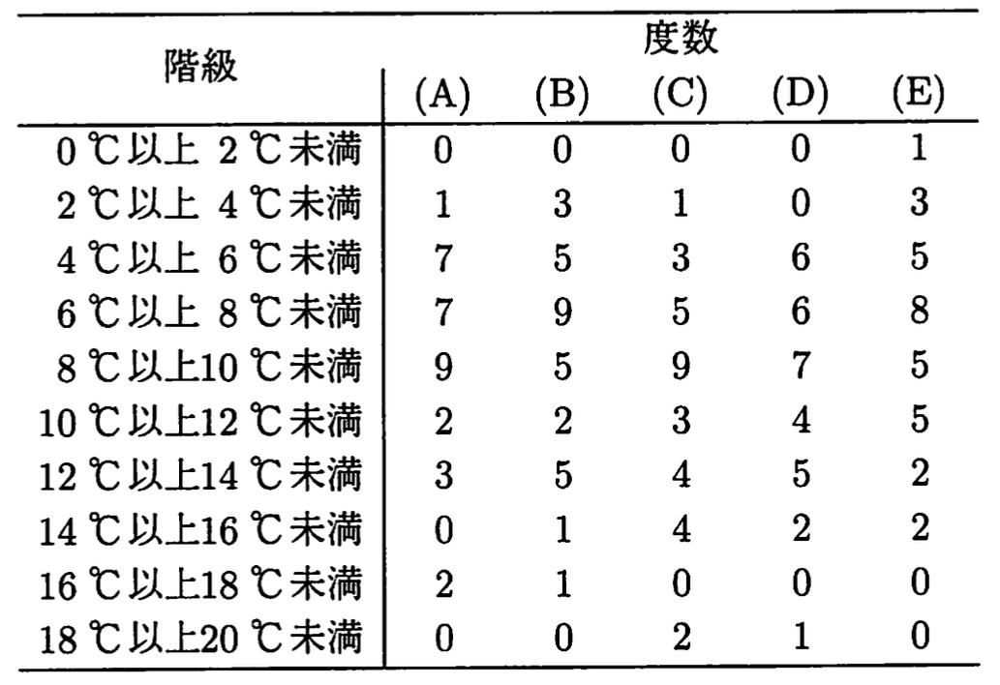
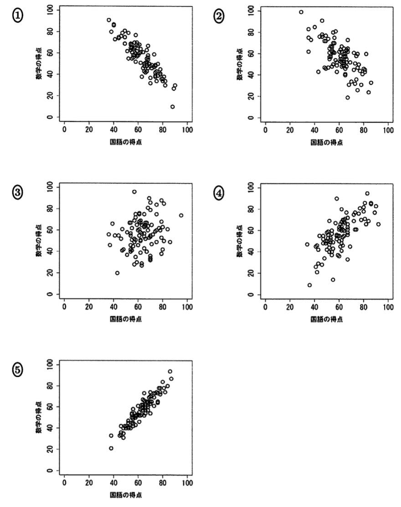
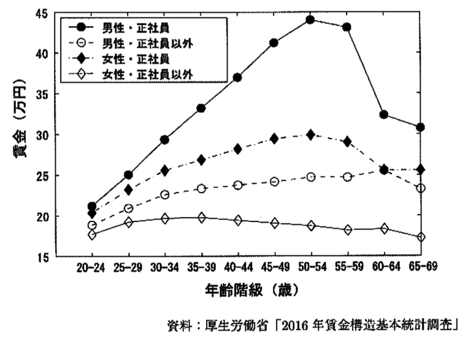

第1回 統計検定2級 過去問演習： データの分布と確率
「日本統計学会公式認定 統計検定2級公式問題集(2018~2021年)」より抜粋。
パート1：データの記述と分布
問題1：データの分布・歪度（2021年6月 問1）
次の図は，1975年から2018年までの日本の消費者物価上昇率の推移である。ここで，消費者物価上昇率とは，消費者物価指数の年次変化率（単位：%）である。

{kind=link}
1975年から2018年までの日本の消費者物価上昇率の平均値は \(1.730\%\)，中央値は \(0.658\%\) であった。消費者物価上昇率の分布と歪度の特徴について，次の①〜⑤のうちから最も適切なものを一つ選べ。
- 分布は右に長い裾をもち，歪度は正の値をとる。
- 分布は右に長い裾をもち，歪度は負の値をとる。
- 分布は左に長い裾をもち，歪度は正の値をとる。
- 分布は左に長い裾をもち，歪度は負の値をとる。
- 分布は左右対称であり，歪度は0である。
問題2：箱ひげ図と度数分布表（2019年11月 問1）
次の図は，2018年12月1日〜12月31日の，東京・名古屋・大阪・広島・福岡（以下，「5都市」とする）の日平均気温（日ごとの値，単位：℃）の箱ひげ図である。 なお，これらの箱ひげ図では，“「第1四分位数」－「四分位範囲」× 1.5” 以上の値をとるデータの最小値，および“「第3四分位数」＋「四分位範囲」× 1.5” 以下の値をとるデータの最大値までひげを引き，これらよりも外側の値を外れ値として○で示している。

{kind=link}
〔1〕 次の表は，5都市の平均気温の度数分布表である。ここで，(A) 〜 (E) は，それぞれ東京・名古屋・大阪・広島・福岡のいずれかを表している。

{kind=link}
東京の度数として，次の①〜⑤のうちから適切なものを一つ選べ。
- (A)
- (B)
- (C)
- (D)
- (E)
〔2〕 5都市の平均気温の箱ひげ図から読み取れることとして，次の①〜⑤のうちから最も適切なものを一つ選べ。
- 平均気温の範囲が最も大きい都市は広島である。
- 平均気温の四分位範囲が最も小さい都市は名古屋である。
- 平均気温の第1四分位数が最も大きい都市は福岡である。
- 平均気温の中央値が最も小さい都市は大阪である。
- 平均気温の最大値が最も小さい都市は東京である。
問題3：散布図と相関（2019年6月 問2）
ある中学校の生徒 100 人が，国語と数学のテストを受けた。いずれも 100 点満点である。この結果，国語の得点の標準偏差は 12.5，数学の得点の標準偏差は 16.4，国語と数学の得点の相関係数は 0.72 であった。
〔1〕 国語と数学の得点の散布図として，次の①〜⑤のうちから最も適切なものを一つ選べ。

{kind=link}
〔2〕 国語と数学の得点の共分散はいくらか。次の①〜⑤のうちから最も適切なものを一つ選べ。
- 112.5
- 147.6
- 184.7
- 193.7
- 205.0
〔3〕 次の記述は，数学の得点のみ 2 倍にしたときの，変動係数と共分散の変化に関するものである。
すべての生徒について数学の得点のみ 2 倍にすると，数学の得点の変動係数は (A)。また，国語と数学の得点の共分散は (B)。
(A) と (B) に当てはまるものの組合せとして，次の①〜⑤のうちから適切なものを一つ選べ。
- (A) 変わらない (B) 変わらない
- (A) 変わらない (B) 2 倍になる
- (A) 2 倍になる (B) 変わらない
- (A) 2 倍になる (B) 2 倍になる
- (A) 2 倍になる (B) 4 倍になる
問題4：散布図と相関の解釈（2018年11月 問2）
次の図は，性別と雇用形態別に，一般労働者の年齢（5 歳ごとの階級）と 6 月の所定内給与額の平均（以下，賃金）をプロットしたものである。

{kind=link}
年齢の階級値と賃金の相関係数を，性別と雇用形態別に計算したところ，次の表のようになった。
| 男性・正社員 | 男性・正社員以外 | 女性・正社員 | 女性・正社員以外 |
|---|---|---|---|
| 0.58 | 0.80 | 0.56 | -0.46 |
次の記述 I 〜 III は，表中の相関係数に関するものである。
I. “男性・正社員” と “男性・正社員以外” を比べると，正社員の方が相関係数の絶対値は小さい。ただし，上の図より，正社員の年齢と賃金には直線関係でない関係が存在し，相関係数のみで正社員の年齢と賃金の関係性が強くないと判断してはいけない。
II. “女性・正社員” について，20 歳 〜 54 歳のデータのみで相関係数を計算すると，0.56 より絶対値が小さくなる。
III. “女性・正社員以外” は，年齢が 1 歳上がると賃金が 0.46 万円下がることが相関係数の値よりわかる。
記述 I 〜 III に関して，次の①〜⑤のうちから最も適切なものを一つ選べ。
- I のみ正しい。
- II のみ正しい。
- III のみ正しい。
- I と II のみ正しい。
- I と II と III はすべて誤り。
パート2：確率変数と期待値・分散
問題5：期待値・分散・共分散（2018年6月 問9）
2つの確率変数 \(X\) と \(Y\) に関して，期待値 \(E[X], E[Y], E[XY]\) と分散 \(V[X], V[Y]\) が以下のように与えられている。
〔1〕 それぞれの確率変数の 2 乗の期待値 \(E[X^2], E[Y^2]\) と，共分散 \(\text{Cov}[X, Y]\) について，次の①〜⑤のうちから適切なものを一つ選べ。
- \(E[X^2] = 4.0, \quad E[Y^2] = 9.0, \quad \text{Cov}[X, Y] = 0.3\)
- \(E[X^2] = 4.0, \quad E[Y^2] = 9.0, \quad \text{Cov}[X, Y] = -0.3\)
- \(E[X^2] = 4.0, \quad E[Y^2] = 9.0, \quad \text{Cov}[X, Y] = 6.0\)
- \(E[X^2] = 5.0, \quad E[Y^2] = 10.0, \quad \text{Cov}[X, Y] = 0.3\)
- \(E[X^2] = 5.0, \quad E[Y^2] = 10.0, \quad \text{Cov}[X, Y] = -0.3\)
〔2〕 \(X\) と \(Y\) に，それぞれ次のような一次変換を施して，新しい確率変数 \(U\) と \(V\) をつくる。
この時， \(U\) と \(V\) の共分散 \(\text{Cov}[U, V]\) と相関係数 \(r[U, V]\) の値として，次の①〜⑤のうちから適切なものを一つ選べ。
- \(\text{Cov}[U, V] = 0.3, \qquad r[U, V] = -0.3\)
- \(\text{Cov}[U, V] = 6.0, \qquad r[U, V] = 0.3\)
- \(\text{Cov}[U, V] = -6.0, \quad r[U, V] = -0.3\)
- \(\text{Cov}[U, V] = -1.8, \quad r[U, V] = -0.3\)
- \(\text{Cov}[U, V] = -1.8, \quad r[U, V] = 0.3\)
問題6：同時確率と独立性（2021年6月 問8）
2 つの離散型確率変数 \(X\) と \(Y\) の同時確率関数を
とし，\(f(x, y)\) が次の表で与えられているとする。
| \(x \backslash y\) | -1 | 0 | 1 |
|---|---|---|---|
| -1 | 0 | 1/4 | 0 |
| 0 | 1/4 | 0 | 1/4 |
| 1 | 0 | 1/4 | 0 |
このとき，確率変数 \(X^2\) と \(Y^2\) の相関係数と独立性について，次の①〜⑤のうちから適切なものを一つ選べ。
- \(X^2\) と \(Y^2\) の相関係数は 0 であり，\(X^2\) と \(Y^2\) は互いに独立である。
- \(X^2\) と \(Y^2\) の相関係数は 0 であり，\(X^2\) と \(Y^2\) は互いに独立ではない。
- \(X^2\) と \(Y^2\) の相関係数は -1/4 であり，\(X^2\) と \(Y^2\) は互いに独立ではない。
- \(X^2\) と \(Y^2\) の相関係数は -1/2 であり，\(X^2\) と \(Y^2\) は互いに独立ではない。
- \(X^2\) と \(Y^2\) の相関係数は -1 であり，\(X^2\) と \(Y^2\) は互いに独立ではない。
パート3：確率の計算（基本確率・ベイズ）
問題7：積事象の確率（2021年6月 問9）
1 年を 365 日とし，人がそれぞれの日にお生まれる確率はすべて等しいとする。今，25 人が無作為に集められた。この 25 人の中に，同じ誕生日の人が存在する確率はいくらか。次の①〜⑤のうちから適切なものを一つ選べ。
- \(\left( \frac{364}{365} \right)^{25}\)
- \(1 - \left( \frac{364}{365} \right)^{24}\)
- \(1 - \left( \frac{364}{365} \right)^{25}\)
- \(\frac{365!}{365^{24} \times 340!}\)
- \(1 - \frac{365!}{365^{25} \times 340!}\)
問題8：確率の計算（2018年6月 問7）
サークルの部室にいた S 君は，隣の部室にお菓子をもらいに行った。隣の部室には T 君と U 君がいて，自分たちと腕相撲を 3 回して 2 連勝した時点でお菓子をあげるという。S 君の対戦順序には 2 つの選択肢があり，「T 君 - U 君 - T 君」，または「U 君 - T 君 - U 君」の順である。S 君が T 君に勝つ確率を \(p\)，U 君に勝つ確率を \(q\) とし，\(0 < p < q < 1\) とする。ただし，各腕相撲の試合の勝敗は互いに独立とする。
〔1〕 「T 君 - U 君 - T 君」の順で対戦するとき，S 君がお菓子を獲得する確率はいくらか。次の①〜⑤のうちから適切なものを一つ選べ。
- \(pq\)
- \(pq + qp\)
- \(p(1-q) + q(1-p)\)
- \(pq(1-p)\)
- \(pq + (1-p)qp\)
〔2〕 S 君は，U 君なら勝ちやすいと考えて，U 君とより多く対戦する「U 君 - T 君 - U 君」の順が有利だと考えた。この選択に対する説明として，次の①〜⑤のうちから最も適切なものを一つ選べ。
- 「T 君 - U 君 - T 君」の方がお菓子獲得の確率は高いので，S 君の選択は好ましくない。
- 「U 君 - T 君 - U 君」の方がお菓子獲得の確率は高いので，S 君の選択は好ましい。
- \(p\) と \(q\) の具体的な値によってお菓子獲得の確率は変わるので，S 君の選択については何も言えない。
- どちらの選択をしてもお菓子獲得の確率は変わらないので，S 君の選択でも問題はない。
- お菓子獲得の確率は，実は T 君と U 君との対戦順序や対戦回数にもよらないので，どんな対戦の仕方をしてもよい。
問題9：条件付き確率（2019年6月 問7）
2つの事象 \(A, B\) に関して，次が成り立つとする。
これから読み取れることとして，次の①〜⑤のうちから適切なものを一つ選べ。
- 事象 \(A\) と \(B\) は独立であり，かつ，排反でもある。
- 事象 \(A\) と \(B\) は独立であるが，排反ではない。
- 事象 \(A\) と \(B\) は排反であるが，独立ではない。
- 事象 \(A\) と \(B\) は排反でも，独立でもない。
- 事象 \(A\) と \(B\) は排反ではなく，また，独立であるかどうかはわからない。
問題10：復元抽出と条件付き確率（2019年6月 問8）
袋 A には赤玉が 2 個，白玉が 3 個入っており，袋 B には赤玉が 1 個，白玉が 4 個入っている。1 から 6 の目が等しい確率で出るサイコロを 1 回投げて 2 以下の目が出たら袋 A から 2 回玉を取り出し，3 以上の目が出たら袋 B から 2 回玉を取り出すこととする。玉を取り出す際はそのたびに元に戻すものとする。
〔1〕 サイコロを 1 回投げるとき，袋 B から赤玉が 1 回だけ取り出される確率はいくらか。次の①〜⑤のうちから適切なものを一つ選べ。
- \(2/75\)
- \(4/75\)
- \(8/75\)
- \(4/25\)
- \(16/75\)
〔2〕 サイコロを 1 回投げるとき，赤玉が取り出される回数を \(X\) とする。\(X\) の期待値として，次の①〜⑤のうちから適切なものを一つ選べ。
- \(4/75\)
- \(8/75\)
- \(16/75\)
- \(4/15\)
- \(8/15\)
問題11：ベイズの定理（2019年11月 問8）
ある検定試験の対策講座が開講され、その対策講座を受講すれば70 %の確率で 検定試験に合格し、受講しなければ30 %の確率で合格するものとする。検定試験 の受験者が対策講座を受講する確率は20 %であるとする。
〔1〕検定試験を受験した人から無作為に1人選んだとき、その人が対策講座を受講 した合格者である確率はいくらか。次の①〜⑤のうちから最も適切なものを一つ選べ。
- 0.14
- 0.20
- 0.24
- 0.30
- 0.70
[2] 検定試験を受験した人から無作為に1人選んだとき、その人が合格者であることが判明した。このとき、その人が対策講座の受講生である確率はいくらか。次の①〜⑤のうちから最も適切なものを一つ選べ・
- 0.02
- 0.15
- 0.37
- 0.48
- 0.59
問題12：確率計算とベイズ（2018年11月 問7）
いろいろな動物の絵がプリントされているクッキーを，工場 A と工場 B で生産している。工場 A で製造されたクッキーの箱の中には 2 % の確率でカモノハシの絵がプリントされているクッキーが入っており，工場 B で製造されたクッキーの箱の中には 8 % の確率でカモノハシの絵がプリントされているクッキーが入っている。ある商店では全商品のうち，70 % を工場 A から，30 % を工場 B から仕入れている。
〔1〕 仕入れたクッキーの箱を無作為に 1 個抽出する。このクッキーの箱の中にカモノハシの絵がプリントされているクッキーが入っている確率はいくらか。次の①〜⑤のうちから最も適切なものを一つ選べ。
- 0.027
- 0.038
- 0.050
- 0.061
- 0.073
〔2〕 仕入れたクッキーの箱を無作為に 1 個抽出したところ，箱の中にカモノハシの絵がプリントされているクッキーが入っていた。このとき，このクッキーが工場 A で製造された確率はい くらか。次の①〜⑤のうちから最も適切なものを一つ選べ。
- 0.257
- 0.368
- 0.521
- 0.630
- 0.756
パート4：確率分布
問題13：ポアソン分布・二項分布（2018年11月 問15）
ある工場の担当者が，A 社と B 社のいずれかのメーカーからある部品の製作機械を仕入れることにした。不良品率の小さい機械を仕入れたいので，それぞれの製品の不良品率を電話で尋ねたところ，A 社も B 社も 5%，という回答であった。これらの回答が正しいかどうかを確認するため，それぞれの機械で 200 個の部品を試作してもらい，実際に不良品率を検査することにした。A 社の機械による 200 個の試作品に混入する不良品の個数を \(X\) として，以下の問いに答えよ。
〔1〕 A 社の回答が正しいと仮定したとき，確率変数 \(X\) が従う分布および，その期待値と分散の組合せとして，次の①〜⑤のうちから最も適切なものを一つ選べ。
- 分布：ポアソン分布， 平均：9.5， 分散：9.5
- 分布：ポアソン分布， 平均：10.0，分散：10.0
- 分布：二項分布， 平均：10.0，分散：9.5
- 分布：二項分布， 平均：10.0，分散：10.0
- 分布：幾何分布， 平均：10.0，分散：10.0
（※〔2〕〔3〕は検定の問題のため、割愛）
問題14：正規分布の計算（2018年11月 問8）
\(U\) を平均 0，分散 1 の正規分布に従う確率変数とする。また \(x\) を実数とし，
とおく。
\(P(Y \ge 0) = 0.95\) となる \(x\) として，次の①〜⑤のうちから最も適切なものを一つ選べ。
- -0.97
- -0.15
- 0.32
- 0.67
- 0.95
問題15：正規分布の確率計算（2021年6月 問10）
確率変数 \(X\) は正規分布 \(N(60, 9^2)\) に従うとする。このとき，\(P(X \le c) = 0.011\) を満たす定数 \(c\) の値はいくらか。次の①〜⑤のうちから最も適切なものを一つ選べ。
- -2.29
- 2.29
- 37.14
- 39.39
- 80.61
問題16：正規分布の再生性（2018年6月 問8）
ある世帯の毎年 6 月における電気料金は，平均 4,000 円，標準偏差 500 円の独立で同一の正規分布で近似される。以下の問いに答えよ。
〔1〕 ある年において，6 月の電気料金が 4,800 円以上になる確率はいくらか。次の①〜⑤のうちから最も適切なものを一つ選べ。
- 0.036
- 0.055
- 0.067
- 0.145
- 0.436
〔2〕 ある年において，6 月の電気料金がその前年の 6 月の電気料金より 800 円以上高くなる確率はいくらか。次の①〜⑤のうちから最も適切なものを一つ選べ。
- 0.027
- 0.110
- 0.129
- 0.212
- 0.500
〔3〕は割愛
問題17：確率密度関数（2019年11月 問9）
ある町内において，1 か月の 1 人暮らしの水道使用量（単位：\(\text{m}^3\)）は連続型確率変数 \(X\) で表され，その確率密度関数 \(f(x)\) は次のように与えられているとする。
ただし，\(a\) は正の定数である。 一方、水道使用料金は\(0≤x<10\)の水道使用量に対しては1000円、\(10≤x<15\) の水道使用量に対しては1120円、\(x\geq15\) の水道使用量に対しては1280円とする。
〔1〕 定数 \(a\) の値として，次の①〜⑤のうちから適切なものを一つ選べ。
- 1
- 1/2
- 1/5
- 1/10
- 1/20
〔2〕 1 か月の水道使用量の期待値はいくらか。次の①〜⑤のうちから適切なものを一つ選べ。
- 200/3
- 100/3
- 40/3
- 20/3
- 10/3
〔3〕は割愛
問題18：幾何分布とチェビシェフの不等式（2021年6月 問12）
確率関数が
の幾何分布に従う母集団から大きさ \(n\) の無作為標本 \(X_1, \dots, X_n\) を抽出し，\(\bar{X} = \frac{1}{n}\sum_{i=1}^n X_i\) をその標本平均とする。このとき，母平均は (ア)，母分散は 6 となることから，チェビシェフの不等式
が成り立つ。ただし，\(\epsilon (\epsilon > 0)\) は任意の小さな正の実数とする。これより，\(n \to \infty\) とすると，標本平均 \(\bar{X}\) は (ア) に近づく。
〔1〕 文中の (ア) に当てはまる数値もしくは式として，次の①〜⑤のうちから適切なものを一つ選べ。
- 1
- 2
- 3
- 6
- \(\bar{X}\)
〔2〕 文中の (イ) に当てはまる式として，次の①〜⑤のうちから適切なものを一つ選べ。
- \(6/n\)
- \(6/\epsilon\)
- \(6/(n\epsilon)\)
- \(6/(n\epsilon^2)\)
- \(\epsilon\)